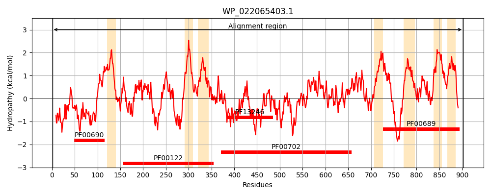
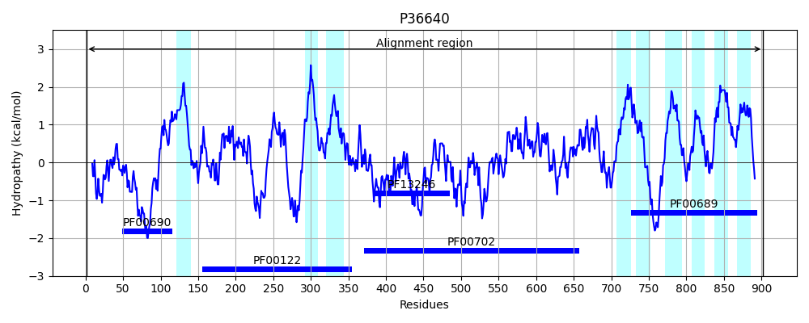
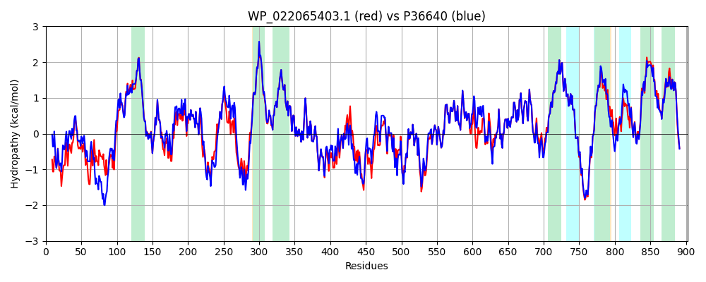

Hit Accession: P36640
Hit TCID: 3.A.3.4.1
Hit Description: gnl|BL_ORD_ID|10064 gnl|TC-DB|P36640|3.A.3.4.1 MG(2+) TRANSPORT ATPASE, P-TYPE 1 (EC 3.6.3.2) - Salmonella typhimurium.
Mach Len: 902
e:0.000000
Query TMS Count : 7
Hit TMS Count: 9
TMS-Overlap Score: 7.300000
Predicted Substrates:CHEBI:6635;magnesium(2+), CHEBI:25517;nickel(2+)
BLAST Alignment:
Score: 4082 , Bit scores: 1576 bits, E-value: 0.0e+00, Alignment length: 902, Percentage identity: 87
Query: 1 MLKNYTRQLFAQLSRHLPRRLVQRDPLPDARNLTSVPIPDSLGKRCLDVAAMDDQEIWRAFDSHPEGLNEGEVAAKILKHGDNQIPAQKPSPWWVHLWTCYRNPFNLLLTVLGIVSYSTEDLFAAGVIALMVGISTLLNFIQEARSTKAADALKAMVSNTATVLRVVNEQGESRWLELPIDQLVPGDIVKLSAGDMIPADLRIIQARDLFVAQASLTGESLPVEKVARSRDPLQQNPLECDTLCFMGTNVVSGSAQAIVYATGGNTWFGQLAGRVSEQESEPNAFQKGISRVSMLLIRFMLVMAPVVLLINGYTKGDWWEAALFALSVAVGLTPEMLPMIVTSTLARGAVKLSKQKVIVKHLDAIQNFGAMDILCTDKTGTLTQDKIVLENHTDVSGKSSERVLHTAWLNSHYQTGLKNLLDTAVLEGVELEAARGLAERWQKVDEIPFDFERRRMSVVVKEQGDAHQLICKGALQEILNVSTQVRYNGEIVPLDDTMLRRIRRVTDTLNRQGLRVVAVATKYLPAREGDYQRADESDLILEGYIAFLDPPKETTAPALKALKASGITVKILTGDSELVAAKVCHEVGLDAGEVVIGSQIEAMSDDDLAALAKRTTLFARLAPLHKERIVTLLKREGHVVGFMGDGINDAPALRAADIGISVDGAVDIAREAADIILLEKSLMVLEEGVIEGRRTFANMLKYIKMTASSNFGNVFSVLVASAFLPFLPMLPLHLLIQNLLYDVSQVAIPFDNVDDEQIRKPQRWNPADLGRFMVFFGPISSIFDILTFGLMWWVFHANTVEMQTLFQSGWFIEGLLSQTLIVHMIRTRRIPFVQSRAAWPLFAMTLVVMAVGIALPFSPLAGYLQLQALPLSYFPWLVVILAGYMVLTQTVKGFYSRRYGWQ 902
MLK TRQLFA+L+RHLP RLV RDPLP A+ + IP SL +RCL VAAM+ + +WR FD+HPEGLN EV KHG+N++PAQKPSPWWVHLW CYRNPFN+LLT+LG +SY+TEDLFAAGVIALMVGISTLLNF+QEARSTKAADALKAMVSNTATVLRV+NE GE+ WLELPIDQLVPGDI+KL+AGDMIPADLRIIQARDLFVAQASLTGESLPVEKVA +R+P Q NPLECDTLCFMGTNVVSG+AQA+V ATG TWFGQLAGRVSEQ++E NAFQKGISRVSMLLIRFMLVMAPVVL+INGYTKGDWWEAALFALSVAVGLTPEMLPMIVTSTLARGAVKLSKQKVIVKHLDAIQNFGAMDILCTDKTGTLTQDKIVLENHTD+SGK SE VLH AWLNSHYQTGLKNLLDTAVLEGV+ AAR L+ RWQK+DEIPFDFERRRMSVVV E + HQL+CKGALQEILNV TQVR+NG+IVPLDD MLRR++RVTDTLNRQGLRVVAVATKYLPAREGDYQR DESDLILEGYIAFLDPPKETTAPALKALKASGITVKILTGDSELVAAKVCHEVGLDAG+V+IGS IE +SDD LAALA RTTLFARL P+HKERIVTLLKREGHVVGFMGDGINDAPALRAADIGISVDGAVDIAREAADIILLEKSLMVLEEGVIEGRRTF+NMLKYIKMTASSNFGNVFSVLVASAFLPFLPMLPLHLLIQNLLYDVSQVAIPFDNVD+EQI+KPQRWNPADLGRFMVFFGPISSIFDILTF LMWWVFHANT E QTLFQSGWF+ GLLSQTLIVHMIRTRR+PF+QSRAAWPL AMTL+VM VG++LPFSPLA YLQLQALPLSYFPWL+ IL GYM LTQ VKGFYSRRYGWQ
Sbjct: 1 MLKIITRQLFARLNRHLPYRLVHRDPLPGAQTAVNATIPPSLSERCLKVAAMEQETLWRVFDTHPEGLNAAEVTRAREKHGENRLPAQKPSPWWVHLWVCYRNPFNILLTILGGISYATEDLFAAGVIALMVGISTLLNFVQEARSTKAADALKAMVSNTATVLRVINENGENAWLELPIDQLVPGDIIKLAAGDMIPADLRIIQARDLFVAQASLTGESLPVEKVAATREPRQNNPLECDTLCFMGTNVVSGTAQAVVMATGAGTWFGQLAGRVSEQDNEQNAFQKGISRVSMLLIRFMLVMAPVVLIINGYTKGDWWEAALFALSVAVGLTPEMLPMIVTSTLARGAVKLSKQKVIVKHLDAIQNFGAMDILCTDKTGTLTQDKIVLENHTDISGKPSEHVLHCAWLNSHYQTGLKNLLDTAVLEGVDETAARQLSGRWQKIDEIPFDFERRRMSVVVAEDSNVHQLVCKGALQEILNVCTQVRHNGDIVPLDDNMLRRVKRVTDTLNRQGLRVVAVATKYLPAREGDYQRIDESDLILEGYIAFLDPPKETTAPALKALKASGITVKILTGDSELVAAKVCHEVGLDAGDVIIGSDIEGLSDDALAALAARTTLFARLTPMHKERIVTLLKREGHVVGFMGDGINDAPALRAADIGISVDGAVDIAREAADIILLEKSLMVLEEGVIEGRRTFSNMLKYIKMTASSNFGNVFSVLVASAFLPFLPMLPLHLLIQNLLYDVSQVAIPFDNVDEEQIQKPQRWNPADLGRFMVFFGPISSIFDILTFCLMWWVFHANTPETQTLFQSGWFVVGLLSQTLIVHMIRTRRLPFIQSRAAWPLMAMTLLVMVVGVSLPFSPLASYLQLQALPLSYFPWLIAILVGYMTLTQLVKGFYSRRYGWQ 902 | Protein Hydropathy Plots: |
|---|
|  |  |
Pairwise Alignment-Hydropathy Plot:
|
|---|
|  |